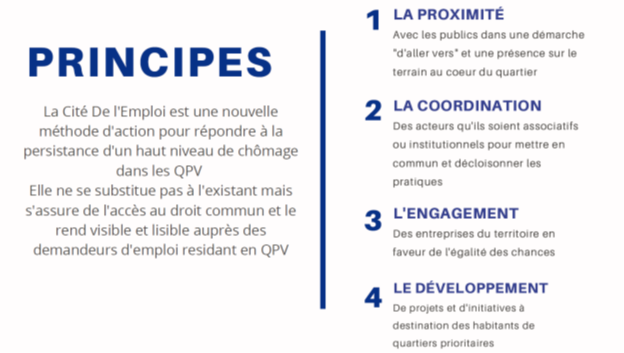
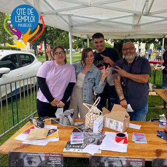

Si vous habitez l’un des quartiers de Sous le Bois- Montplaisir,
Epinette ou Pont de Pierre, et que vous n’avez pas trouvé dans
tous les services qui vous ont été proposés jusqu’ici, Osez la
Cité de l’emploi et appelez Sofia, Fabrice ou Rabah au 03 66 32 32
00 ou 06 23 18 82 11
Déjà 165 personnes rencontrées en 2021, et 30 % des volontaires en
solution formation ou emploi

https://agence-cohesion-territoires.gouv.fr/cites-de-lemploi-571
La Cité De l’Emploi de Maubeuge c’est un
éco système d’une cinquantaine d’acteurs
aux casquettes différentes et pas seulement des professionnels de
l’insertion, (club sportif, asso de quartier…)
Avec un objectif de
se rapprocher de 80 personnes issus des 3 quartiers prioritaires :
Sous Le Bois-Montplaisir / L’Epinette / Pont de Pierre.
La Cité de l’Emploi s’adresse aux personnes ne bénéficiant pas déjà
d’un accompagnement, ayant décroché ou « rompu » leur lien avec les
traditionnels professionnels de l’emploi ou de la formation.
En premier lieu : rétablir la confiance par l’écoute et une approche
mutuelle sincère et respectueuse, puis faciliter et renforcer le
lien avec ceux qui peuvent vous aider à sortir de l’ornière.
Pour ce faire Fabrice Rabah et Sofia sont sur le terrain tous les
jours au cœur des quartiers prioritaires pour aller à la rencontre
des habitants.
L’approche est essentielle, nous avons pour méthode de valoriser, de
booster, de vous faire prendre conscience de votre potentiel.
Ensemble, un diagnostic est établi lors d’un entretien individuel et
le volontaire est orienté vers le ou les bons interlocuteurs.
Nous rendons visible et accessible aux habitants de quartiers
prioritaires que nous rencontrons, ce qui existe et leur est tout
autant destiné qu’aux autres habitants.
La CDE reste en veille et en appui tout au long du parcours des
volontaires jusqu’à l’accès à l’emploi, la formation ou la création
d’entreprise.
Les entreprises
Nous avons souhaité faire des acteurs économiques un éléments clé du
programme. Ils sont les créateurs d’emploi et les quartiers
regorgent de compétences.
Notre rôle est de sensibiliser les entreprises à l’égalité des
chances, aux talents potentiels et compétences décelés dans les
quartiers.
Démystifier les idées reçues et clichés d’un côté comme de l’autre
(celle que les habitants peuvent avoir de l’entreprise et
inversement celle que les entreprises peuvent avoir des habitants de
QPV)
Le 27 avril, La Cité De l’Emploi de Maubeuge a lancé le « CLUB DES
ENTREPRISES INCLUSIVES ET SOLIDAIRES »
L’élaboration d’une charte qui permet à toutes entreprises qui le
souhaitent de s’engager en faveur de l’égalité des chances et des
candidats de la Cité De l’Emploi de Maubeuge.
Elle s’articule autour de différents axes (Accès à l’emploi et
Alternance, Mentorat, Accueil en stage et immersion, soutien aux
initiatives, visite d’entreprises, soutien aux entrepreneurs…)
A ce jour, 12 entreprises ont adhérée au Club des Entreprises
Inclusives et Solidaires de la Cité De l’Emploi.
Linkedin
Projets & événements
Impulser des nouveaux projets et de nouvelles dynamiques dans/pour
les quartiers et leurs habitants. La CDE de Maubeuge c’est aussi une
ingénierie de projet et une capacité à imaginer, écrire, financer,
mettre en œuvre et coordonner de nouvelles initiatives.
- NOS QUARTIERS D’ETE (JUILLET/AOUT)
En partenariat avec l’association culturelle et sportive Secteur 7,
mise en place d’un stand Cité De l’Emploi au cœur des quartiers
prioritaires durant la période estivale pour aller à la rencontre
des habitants et promouvoir le programme par le biais d’une approche
conviviale. (Ateliers interactifs, réalité virtuelle, Mur
d’expression Libre…)

Photo Instagram
- SUMMER UNITED (AOUT / SEPTEMBRE)
Dans le cadre des quartiers d’été, financement de 10 job d’été pour
10 jeunes habitants en QPV (5 sur Maubeuge et 5 sur Fourmies )
autour d’un projet intergénérationnel qui a permis de renforcer le
lien entre jeunes et ainés. Une opération à dimension humaine,
d’utilité sociale pour rompre l’isolement des séniors
particulièrement présent suite à la crise sanitaire. Mais surtout un
enrichissement mutuel pour ces deux générations.
Article Facebook
Photo Instagram
- OSE LA FONCTION PUBLIQUE – LA CORDEE (SEPTEMBRE)
Un programme dédié aux demandeurs d’emploi (diplômés ou non) issus
de quartiers prioritaires qui propose un parcours d’ateliers
interactifs, de visites d’administrations et de rencontre d’agents
publics pour découvrir les métiers de la fonction publique.
Un dispositif de mentorat pour définir son projet professionnel et
booster sa recherche d’emploi avec des mentors bienveillants et
ayant une bonne connaissance de la fonction publique.
- OSE LA FONCTION PUBLIQUE – LA CORDEE (SEPTEMBRE)
Un programme dédié aux demandeurs d’emploi (diplômés ou non) issus
de quartiers prioritaires qui propose un parcours d’ateliers
interactifs, de visites d’administrations et de rencontre d’agents
publics pour découvrir les métiers de la fonction publique.
Un dispositif de mentorat pour définir son projet professionnel et
booster sa recherche d’emploi avec des mentors bienveillants et
ayant une bonne connaissance de la fonction publique.
Retrouvez nous sur :
Instagram
Linkedin
En partenariat avec l’ANCT et Pôle emploi